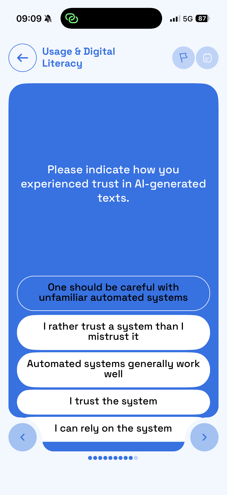
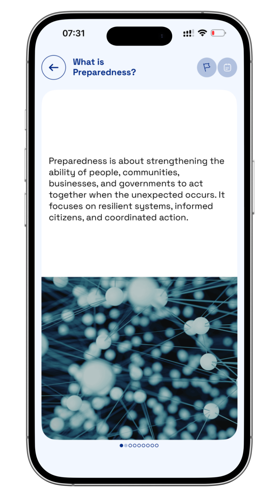
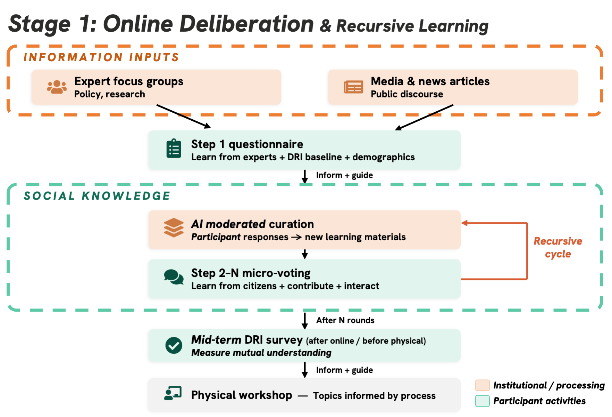

01
Download or open Atgora
Use the App Store or Google Play link on this page, then install or open the Atgora app.

Swiss residents 18+ are invited
AI is already changing Switzerland: how people learn, work, are hired, train for new skills, and use public services. Researchers from a Swiss research consortium invite people living in Switzerland to add their voice to a study on how AI should shape work, education, and labour markets.
You do not need to be an AI expert. We want to hear from people with different backgrounds, regions, jobs, education paths, and everyday experiences with technology.
Why your voice matters
AI is no longer only a technical topic. It can affect hiring, training, productivity, worker protection, education, public services, and who benefits from new tools.
Good policy should be shaped by people who live with these changes, not only by experts, companies, or institutions. This study asks people living in Switzerland to share the questions, concerns, and ideas they want decision-makers to hear.
The results will contribute to a TA-SWISS report/book and policy outputs for Swiss decision-makers, including the Swiss Parliament.
Join the study
Scan the QR code for your phone or use the store buttons. Atgora is the app used for four short online participation rounds between May 19 and June 5, around 10 minutes each.
Start in Atgora
After downloading Atgora, open the app, go to Courses, choose Swiss AI Futures, and start the Stage 1 Questionnaire. These screens show the path from the app listing to the first study questions.
Use the App Store or Google Play link on this page, then install or open the Atgora app.
On the home screen, open the Courses tab and select the Swiss AI Futures course card.

Inside Swiss AI Futures, tap Stage1 Questionnaire to begin the first study module.

Read the question, choose the answer that best fits your view, and use the arrow to continue.

Main funder
TA-SWISS is the Swiss Foundation for Technology Assessment. It supports interdisciplinary studies and participatory projects that examine the social, legal, ethical, and political consequences of emerging technologies. Its recommendations are intended to support public debate and decision-making in Switzerland, including for Parliament and the Federal Council.
Learn more about TA-SWISSWhere this study fits
The project first maps what is already known about LLMs, then develops future scenarios and gathers input from focus groups. This page invites people living in Switzerland into the third phase: public app-based discussion and possible in-person workshops, so public perspectives can be considered while recommendations for policy are being developed.
Researchers review published work on LLMs, analyse public AI and LLM documents, study institutional and policy responses, and run experiments on how LLM training affects skills-test results.
The project explores future scenarios through focus groups and supporting experiments on possible loss or growth of skills, with help from a specialist research partner.
This is the phase you are being invited to join. App rounds and possible workshops connect earlier findings with everyday experiences, policy priorities, and ethical questions about LLMs, helping show what people in Switzerland want protected, improved, or debated before AI becomes more common in everyday work.
Why the study uses an app
The Atgora app lets participants return for four short rounds, usually around 10 minutes each. Later rounds may reflect views, short arguments, or disagreements shared earlier, so the discussion can develop without everyone being online at the same moment.

Round 01
Read short learning content about AI, jobs, skills, education, and public policy.
Interface examples; study prompts will focus on AI, work, education, and skills.
How public input is used
In each app round, participants receive a short learning prompt or question. After the round closes, the study team reviews the previous input and uses it to shape the next round of learning material and voting questions.
The diagram below is for people who want the research detail. In the app itself, you only need to follow the short prompts.

Participant journey
Most participation happens in the Atgora app between May 19 and June 5. You only need to return about four times over these two weeks, for roughly 10 minutes each time. The workshop is a separate possible next step for engaged participants.
Use the App Store or Google Play links on this page.
Read the study information, confirm consent, and answer a short understanding check in the app.
Share views about AI, work, productivity, worker protection, education, inequality, and new skills.
Open the app about four times over the two weeks, around 10 minutes each time, for learning modules, quick polls, and short responses.
If you stay engaged and complete the main tasks, you may have a chance to be invited, subject to capacity and availability.
Invited participants may attend one physical workshop to review and refine study outputs.
Eligibility
You can still join the app study even if you are unsure whether you can attend an in-person workshop.
Participants who stay engaged and complete the main app tasks may have a chance to be invited to one physical workshop in Zurich or Lausanne. Invitations depend on workshop capacity, availability during June 15-19, and separate written consent.
Time commitment
Participants are asked to interact with the app about four times between May 19 and June 5. Each visit should take around 10 minutes, and the app may send a reminder when a new round is available.
Approximate total: about 40 minutes across the app study.
Participation
The online rounds are a voluntary contribution to public-interest research. If you stay engaged throughout the app study, you may later be invited to a separate in-person workshop in Zurich or Lausanne.
The workshop stage is separate and includes a fixed CHF 40 voucher for invited participants who attend. Travel costs are not reimbursed.
Privacy and data protection
ETH Zurich is responsible for the research data. Identifying information is stored separately from coded research data, which means study data is stored under an ID rather than your name. App infrastructure is hosted in the European Union, Stockholm region.
Participation is voluntary. You may withdraw at any time without giving a reason and without disadvantage. You may request access, correction, deletion, or restriction of processing where applicable.
FAQ
No. The app includes short learning modules to help participants engage with the topic.
The study asks participants to contribute about four times between May 19 and June 5, usually around 10 minutes each time. The app lets participants return for new rounds and receive reminders when a round is available.
This stage is focused on voluntary app input. Compensation applies only to the separate in-person workshop stage: invited participants who attend receive a flat-rate CHF 40 voucher. Travel costs are not reimbursed.
No. Participants who stay engaged throughout the app study and complete the main tasks may have a chance to be invited to one of two physical workshops, one in Zurich and one in Lausanne, planned for June 15-19. Invitations depend on workshop capacity, availability, and the additional consent process.
No. The study does not use app geolocation or background tracking.
Yes. You may withdraw at any time without giving a reason and without disadvantage.
Join the study
Scan the QR code for your phone or use the store buttons. Atgora is the app used for four short online participation rounds between May 19 and June 5, around 10 minutes each.
Links open the official Atgora app listings and the Atgora information page.
Who is running the study
The study belongs to the project Transforming Competencies in the Era of Large Language Models (LLMs) and Detecting Future Directions, with a Swiss-affiliated research team working across institutions in Switzerland.

Joshua C. Yang, ETH Zürich · joshuacyang.com · joyang@ethz.ch
Maud Reveilhac, LUT University · Project lead for the broader TA-SWISS study.
Clement Guitton, Universität St.Gallen · Gerold Schneider, Universität Zürich · Martial Pasquier, Universität Lausanne, IDHEAP · Aurelia Tamò-Larrieux, Universität Lausanne · Bohdan Trembovelskyi, Universität Lausanne, IDHEAP · Vlada Druta, Universität Lausanne · Nisha Yadav, LUT University
Simon Mayer, Universität St.Gallen · Kenneth Horvath, Pädagogische Hochschule Zürich · Emmanuel Sylvestre, Universität Lausanne
TA-SWISS, Main funder: Swiss Foundation for Technology Assessment · Visit TA-SWISS · @gora Foundation / Carbon Copy, Technology partner and Atgora app provider · Visit the Atgora app page
Data controller: ETH Zurich · Data protection officer: Tomislav Mitar, tomislav.mitar@sl.ethz.ch · Ethics complaints: ETH Zurich Ethics Commission office, ethics@sl.ethz.ch